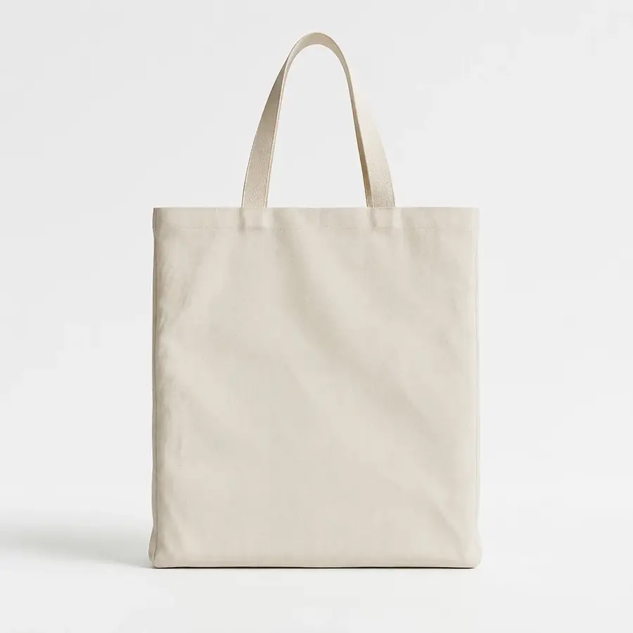

A ecobag deixou de ser só uma sacola sustentável: virou mídia de marca. Barata de produzir, útil no dia a dia e com área enorme para estampa, ela é um dos brindes de melhor custo-benefício do mercado — e também um produto de venda para marcas autorais. Neste guia você entende materiais, tamanhos, técnicas e custos para escolher a ecobag certa.
Por que a ecobag funciona tão bem como brinde
Diferente de brindes descartáveis, a ecobag é reutilizada por meses. Cada uso é uma exposição da sua marca na rua, no mercado, na academia. E porque a peça é barata em volume, o custo por impressão (quantas vezes o logo aparece) é um dos menores entre todos os brindes.
Materiais mais usados
- Algodão cru: o clássico. Toque natural, cara sustentável e ótima base para estampa. Gramaturas comuns vão de 120g a 240g — quanto maior, mais encorpada;
- Lona de algodão: mais firme e durável, com visual premium. Ideal para marcas que querem uma ecobag que dure anos;
- TNT: o mais barato, para ações de altíssimo volume e curta duração (eventos, feiras). Menos durável;
- RPET (poliéster reciclado): leve, resistente e com apelo sustentável real, feito de garrafa PET reciclada.
Tamanhos que mais saem
O tamanho padrão (cerca de 40x40 cm) atende quase tudo. Para feira e supermercado, modelos maiores com alça reforçada; para brinde de evento, tamanhos médios com alça curta. Alça longa (tira-colo) tem apelo fashion e é a preferida de marcas de moda.
Técnicas de personalização
A escolha muda o custo e o resultado. Resumo rápido:
- Silk screen: melhor custo em volume, ideal para logo em 1 a 3 cores;
- Sublimação / estampa total: cobre a peça inteira com arte colorida (exige tecido sintético como rPET);
- Bordado: acabamento premium e durabilidade máxima, ótimo para marcas autorais.
Para entender qual técnica combina com o seu projeto, veja nosso guia de bordado, silk ou sublimação.
Quanto custa uma ecobag personalizada
O preço por peça cai muito conforme a quantidade e depende de material, tamanho e técnica. Em produção sob medida, o custo unitário é sempre menor em lotes maiores — por isso ecobag é um dos brindes preferidos para grandes volumes. O caminho certo é fechar o material e a arte primeiro, e só então cotar a quantidade.
Para ver modelos, materiais e tamanhos que produzimos, acesse a página de ecobags personalizadas.
Ecobag para brinde ou para vender?
Se é brinde, priorize custo e área de logo. Se é para vender com a sua marca, invista em material encorpado, alça bem-feita e etiqueta — detalhes que justificam preço. Nos dois casos, a peça piloto resolve a dúvida: você aprova a amostra física antes do lote. Veja também como criar uma marca de bolsas e acessórios.
Se o objetivo é brinde, veja também a nossa linha de brindes corporativos personalizados.
Tipos de alça: o detalhe que muda o uso
A alça define o conforto e a percepção de qualidade da ecobag. A alça curta (de mão) tem visual mais fashion e é comum em totes; a alça longa (de ombro) é a mais prática para o dia a dia e para carregar peso; já a alça em corda ou fita colorida agrega estilo e vira elemento de marca. Para ecobags que vão vender, uma alça bem dimensionada e reforçada no ponto de costura faz toda a diferença — é um dos primeiros detalhes que o consumidor avalia ao pegar a peça.
Ecobag sustentável: materiais que reforçam a mensagem
Se a sua marca tem posicionamento consciente, o material precisa acompanhar o discurso. Vale priorizar algodão cru, lona reciclada ou RPET (poliéster de garrafa PET reciclada). Além do apelo ambiental real, esses materiais viram argumento de venda e conteúdo para as redes sociais — a história de "feito com material reciclado" engaja e diferencia. Só confirme na peça piloto que o material aceita bem a sua técnica de estampa.
Tamanhos mais usados
Não existe tamanho único, mas alguns padrões cobrem a maioria dos projetos: pequena (aprox. 30x35 cm) para brinde leve e sacola de loja; média/padrão (aprox. 38x42 cm) a mais versátil, boa para o dia a dia; e grande/oversized (aprox. 45x50 cm) para praia, feira ou um visual mais fashion. O tamanho também afeta a área útil para a arte — logos grandes pedem ecobags maiores.
Perguntas frequentes
Qual o pedido mínimo de ecobag personalizada?
Produzimos a partir de 20 unidades por modelo, com peça piloto aprovada antes do lote.
Qual material é melhor para ecobag?
Algodão cru e lona são os mais usados pela boa aceitação de estampa e visual premium. Para posicionamento sustentável, lona reciclada ou RPET.
Qual a melhor técnica de estampa para ecobag?
Silk screen para logos de poucas cores em grande volume (melhor custo) e sublimação para estampas coloridas em tecido claro. Bordado quando quer acabamento premium.
Pronto para produzir com a LS Confecções?
Fabricação B2B de bolsas, mochilas e acessórios personalizados a partir de 20 unidades, em São Paulo. Fale direto com nosso comercial e receba uma proposta em minutos.
Solicitar orçamento